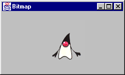
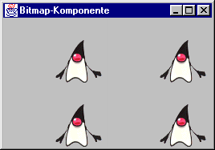

34.1 Bitmaps
34.1.1 Laden und Anzeigen einer Bitmap
Das Anzeigen einer Bitmap kann in zwei Schritte unterteilt werden:
- das Laden der Bitmap von einem externen Speichermedium oder aus
dem Netz
- die eigentliche Ausgabe auf den Bildschirm
Das Laden erfolgt mit der Methode getImage,
die eine Instanz der Klasse Image
zurückgibt. Das Image-Objekt
kann dann mit der Methode drawImage
der Klasse Graphics
angezeigt werden.
getImage
gibt es in verschiedenen Varianten, die sich dadurch unterscheiden,
aus welcher Quelle sie die Bitmap-Daten laden. In einer Java-Applikation
wird in der Regel die Methode getImage
aus der Klasse Toolkit
verwendet. Sie erwartet den Namen einer lokalen Datei als Parameter:
getImage
versteht in der aktuellen Version die Bitmap-Typen gif,
png und jpeg.
Andere Grafikformate,
wie etwa das unter Windows gebräuchliche bmp-Format,
werden nicht unterstützt, sondern müssen bei Bedarf konvertiert
werden.
Neben den getImage-Methoden
gibt es seit dem JDK 1.2 auch zwei Methoden mit dem Namen createImage
in der Klasse Toolkit:
public abstract Image createImage(String filename)
public abstract Image createImage(URL url)
|
java.awt.Toolkit |
Sie laden ein Image bei jeder Verwendung neu und führen (im Gegensatz
zu getImage)
kein Caching des Bilds durch. Die JDK-Dokumentation empfiehlt sie
gegenüber getImage,
weil bei deren Verwendung Speicherlecks durch das unbegrenzte Zwischenspeichern
der Bilddaten entstehen können.
Das Toolkit
für die aktuelle Umgebung kann mit der Methode getToolkit
der Klasse Component
beschafft werden:
Der gesamte Code zum Laden einer Bitmap duke.gif
sieht daher so aus:
001 Image img;
002 img = getToolkit().getImage("duke.gif");
|
Listing 34.1: Laden einer Bitmap-Datei
Um das Image
anzuzeigen, kann die Methode drawImage
der Klasse Graphics
aufgerufen werden:
public boolean drawImage(
Image img, int x, int y, ImageObserver observer
)
|
java.awt.Graphics |
drawImage
gibt es in unterschiedlichen Ausprägungen. Die hier vorgestellte
Variante erwartet das anzuzeigende Image-Objekt
und die Position (x,y), an der
die linke obere Ecke der Bitmap platziert werden soll. Das zusätzlich
angegebene Objekt observer dient
zur Übergabe eines ImageObserver-Objekts,
mit dem der Ladezustand der Bitmaps überwacht werden kann. Hier
kann der this-Zeiger,
also eine Referenz auf das Fensterobjekt, übergeben werden. Weitere
Varianten von drawImage,
die ein Bild sogar skalieren und spiegeln können, werden in der
API-Dokumentation beschrieben.
Das folgende Listing ist ein einfaches Beispiel für das Laden
und Anzeigen der Bitmap duke.gif. Alle
erforderlichen Aktionen erfolgen innerhalb von paint:
001 public void paint(Graphics g)
002 {
003 Image img;
004 img = getToolkit().getImage("duke.gif");
005 g.drawImage(img,40,40,this);
006 }
|
Listing 34.2: Laden und Anzeigen einer Bitmap
Die Ausgabe des Programms ist:

Abbildung 34.1: Laden und Anzeigen einer Bitmap
Die Klasse MediaTracker
Manchmal kann es sinnvoll sein, den tatsächlichen Ladevorgang
des Bilds abzuwarten, bevor im Programm fortgefahren wird. Wird zum
Beispiel die Größe der Bitmap benötigt, um sie korrekt
auf dem Bildschirm anordnen oder skalieren zu können, muss das
Programm warten, bis das Image
vollständig erzeugt ist.
Für diese Zwecke steht die Klasse MediaTracker
zur Verfügung, die das Laden eines oder mehrerer Bilder überwacht.
Dazu wird zunächst eine Instanz der Klasse angelegt:
Als Komponente wird der this-Zeiger
des aktuellen Fensters übergeben. Anschließend werden durch
Aufruf von addImage
alle Bilder, deren Ladevorgang überwacht werden soll, an den
MediaTracker
übergeben:
Der zusätzlich übergebene Parameter id
kann dazu verwendet werden, einen Namen zu vergeben, unter dem auf
das Image
zugegriffen werden kann. Zusätzlich bestimmt er die Reihenfolge,
in der die Images geladen werden. Bitmaps mit kleineren Werten werden
zuerst geladen.
Der MediaTracker
bietet eine Reihe von Methoden, um den Ladezustand der Bilder zu überwachen.
Wir wollen hier nur die Methode waitForAll
betrachten. Sie wartet, bis alle Images vollständig geladen sind:
Das vollständige Beispielprogramm zur Anzeige von duke.gif
sieht nun so aus:
001 /* Listing3403.java */
002
003 import java.awt.*;
004 import java.awt.event.*;
005
006 public class Listing3403
007 extends Frame
008 {
009 private Image img;
010
011 public static void main(String[] args)
012 {
013 Listing3403 wnd = new Listing3403();
014 }
015
016 public Listing3403()
017 {
018 super("Bitmap");
019 setBackground(Color.lightGray);
020 setSize(250,150);
021 setVisible(true);
022 //WindowListener
023 addWindowListener(new WindowClosingAdapter(true));
024 //Bild laden
025 img = getToolkit().getImage("duke.gif");
026 MediaTracker mt = new MediaTracker(this);
027 mt.addImage(img, 0);
028 try {
029 //Warten, bis das Image vollständig geladen ist,
030 mt.waitForAll();
031 } catch (InterruptedException e) {
032 //nothing
033 }
034 repaint();
035 }
036
037 public void paint(Graphics g)
038 {
039 if (img != null) {
040 g.drawImage(img,40,40,this);
041 }
042 }
043 }
|
Listing3403.java |
Listing 34.3: Programm zum Laden und Anzeigen einer Bitmap
34.1.2 Entwicklung einer eigenen Bitmap-Komponente
Ein schönes Beispiel für die Verwendung von Bitmaps ist
die Konstruktion einer Komponente BitmapComponent,
die in Dialogboxen zur Anzeige von Bitmaps verwendet werden kann.
Die Verwendung soll dabei so einfach wie möglich sein, d.h.,
außer der Übergabe des Dateinamens an den Konstruktor soll
kein zusätzlicher Aufwand entstehen.
Zur Konstruktion der Komponente gehen wir in folgenden Schritten vor:
- Ableiten einer neuen Klasse BitmapComponent
aus Canvas
- Überlagern des Konstruktors, um dort die Bitmap zu laden
- Überlagern von paint,
um das Image auf dem Bildschirm auszugeben
- Überlagern von getPreferredSize
und getMinimumSize,
um dem Layoutmanager die Größe der Komponente mitzuteilen
Nach diesen Ausführungen ist die Implementierung einfach:
001 /* BitmapComponent.java */
002
003 import java.awt.*;
004
005 class BitmapComponent
006 extends Canvas
007 {
008 private Image img;
009
010 public BitmapComponent(String fname)
011 {
012 img = getToolkit().getImage(fname);
013 MediaTracker mt = new MediaTracker(this);
014
015 mt.addImage(img, 0);
016 try {
017 //Warten, bis das Image vollständig geladen ist,
018 //damit getWidth() und getHeight() funktionieren
019 mt.waitForAll();
020 } catch (InterruptedException e) {
021 //nothing
022 }
023 }
024
025 public void paint(Graphics g)
026 {
027 g.drawImage(img,1,1,this);
028 }
029
030 public Dimension getPreferredSize()
031 {
032 return new Dimension(
033 img.getWidth(this),
034 img.getHeight(this)
035 );
036 }
037
038 public Dimension getMinimumSize()
039 {
040 return new Dimension(
041 img.getWidth(this),
042 img.getHeight(this)
043 );
044 }
045 }
|
BitmapComponent.java |
Listing 34.4: Eine Komponente zum Anzeigen einer Bitmap
Die Einbindung von BitmapComponent
in einen Dialog erfolgt analog zur Einbindung jeder anderen Komponente
durch Aufruf der Methode add
der Klasse Component.
Das folgende Listing gibt ein Beispiel für die Einbindung der
neuen Komponente:
001 /* Listing3405.java */
002
003 import java.awt.*;
004 import java.awt.event.*;
005
006 public class Listing3405
007 extends Frame
008 {
009 public static void main(String[] args)
010 {
011 Listing3405 wnd = new Listing3405();
012 }
013
014 public Listing3405()
015 {
016 super("Bitmap-Komponente");
017 setBackground(Color.lightGray);
018 setSize(250,150);
019 setVisible(true);
020 //Hinzufügen der Komponenten
021 setLayout(new GridLayout(2,2));
022 add(new BitmapComponent("duke.gif"));
023 add(new BitmapComponent("duke.gif"));
024 add(new BitmapComponent("duke.gif"));
025 add(new BitmapComponent("duke.gif"));
026 pack();
027 //WindowListener
028 addWindowListener(new WindowClosingAdapter(true));
029 }
030 }
|
Listing3405.java |
Listing 34.5: Verwenden der Bitmap-Komponente
Die Ausgabe des Programms ist:

Abbildung 34.2: Verwendung von BitmapComponent